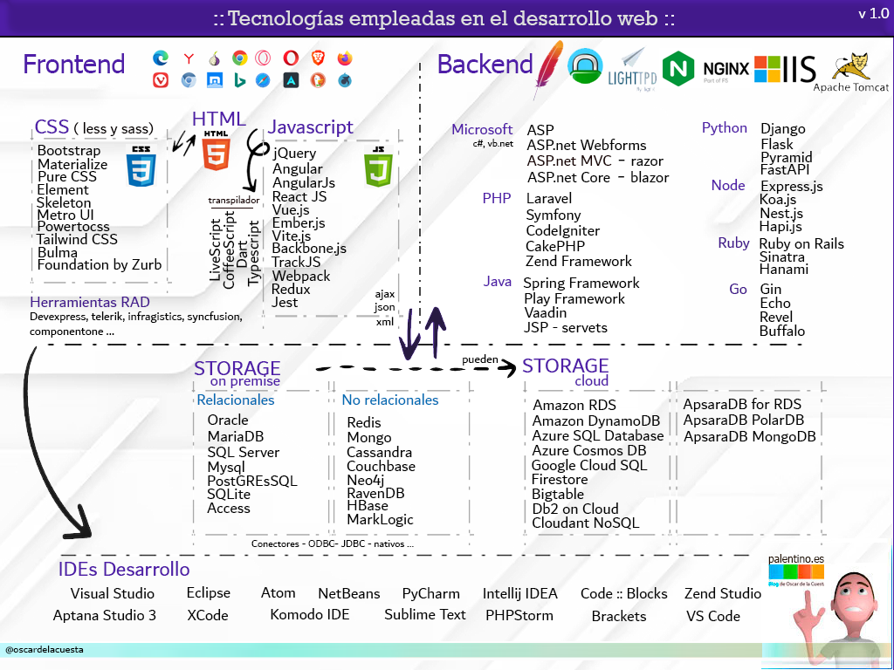
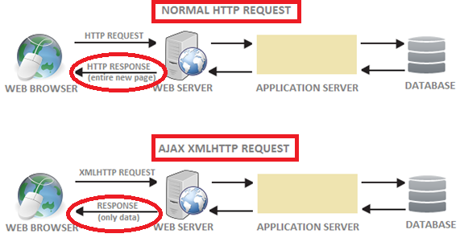
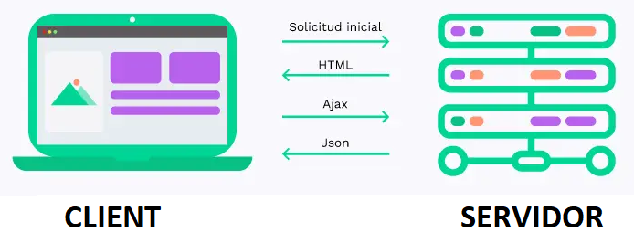

INTRODUCCIO
Diferència entre Llibreria i Framework
Frameworks de JS
Libraries de JS

JavaScript
Per què serveix Ajax?
- Formularis d'inici de sessió
Ajax permet accedir a un formulari bàsic d'inici de sessió i, un cop introduïu la vostra informació d'inici de sessió, les vostres credencials es poden validar sense tornar a carregar el navegador. Haver d'esperar que una pàgina web es torni a carregar només per esbrinar que heu introduït la contrasenya incorrecta provoca una experiència d'usuari horrible.
- Autocompleta
Permet als motors de cerca oferir suggeriments a mesura que els usuaris escriuen a la barra de cerca. Un dels millors exemples és l'eina de suggeriments de cerca de Google. L'eina proporciona cerques habituals a la base de dades a mesura que una persona escriu a la barra de cerca. Cada pulsació de tecla fa que aparegui un suggeriment. Google Docs i Google Maps també són exemples fantàstics de les capacitats d'Ajax.
- Actualització del contingut d'usuari
A través d'Ajax, els usuaris de plataformes com Twitter poden publicar contingut que s'actualitza immediatament a la plataforma.
- Validació de formularis
Es pot controlar fàcilment la força de les contrasenyes, la validesa dels correus electrònics,.... Ajax pot determinar si les entrades d'un formulari compleixen els requeriments.
- Interfície d'usuari eficient
Gràcies a Ajax es poden usar les funcionalitats d'una web amb menys temps de càrrega. Redueix el nombre de sol·licituds, els temps de càrrega i l'ample de banda.
Definició
- AJAX és una tècnica de programació que permet refrescar part del contingut de la pàgina actual sense haver-la de recarregar. Això s'aconsegueix amb una petició asíncrona de JS al servidor, i una vegada obtingutdes les dades també s'usa JS per a actulitzar el contingut de la pàgina. En alguns casos, això millora molt la usabilitat de les aplicacions, i permet agilitar tasques i donar feedback als usuaris de manera molt més ràpida.
- AJAX (Asynchronous JavaScript and XML) és l'art d'intercanviar dades amb un servidor i actualitzar parts d'una pàgina web, sense tornar a carregar tota la pàgina. Per tant, Ajax fa que la pàgina web respongui ràpidament.
Tot i que AJAX és l'acrònim de Asynchronous JavaScript And XML, això no vol dir que el contingut asíncron estigui formatat exclusivament en format XML, de fet es fa servir més per intercanviar dades en format JSON.
| situacions síncrones (sincronitzades) | situacions asíncrones |
|---|
| Conversa per Telèfon | Correu electrònic (e-mail) |
| Entrevista personal | conversa per whatsapp |

Els principals avantatges són:
- Millora la UI (interfície d’usuari) de l’aplicació web
- Guanya en usabilitat de la pàgina, ja que no cal recarregar-la tota sencera, de manera dinàmica només s’actualitza la part que calgui
- El temps d’espera per a una petició es redueix
- El tràfic de dades amb el servidor es pot reduir de manera considerable
- És independent de la plataforma on s’executi
Alguns dels inconvenients:
- Les pàgines creades dinàmicament no són registrades per l’historial del navegador. Així que fer clic al botó enrere no suposa tornar a un estat anterior de la pàgina
- Si abusem de les crides al servidor, la comunicació es pot tornar molt lenta
- SEO(Search engine optimization): pel tema del posicionament en cercadors, cal tenir present que el contingut dinàmic que procedeixi de crides AJAX no es tindrà en compte pels motors de recerca. Per tant, les paraules clau procedents de crides AJAX no es faran servir pel SEO.
Sincronisme vers Asincronisme
La tècnica tradicional de crear pàgines web interactives es basa en la sincronia. Quan l’usuari activa un esdeveniment (normalment un botó), la pàgina fa la petició al servidor i aquest respon amb la nova pàgina a carregar.
Les aplicacions creades amb AJAX eliminen la recàrrega constant de la pàgina mitjançant la creació d’un element intermedi entre l’usuari i el servidor. La nova capa intermèdia millora la resposta de l’aplicació, ja que l’usuari no es troba amb una finestra buida esperant la resposta del servidor.
